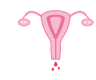
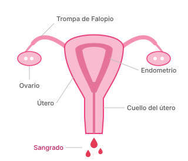
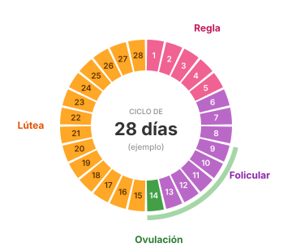
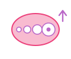
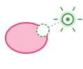
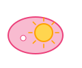
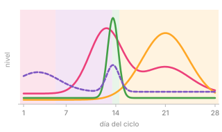
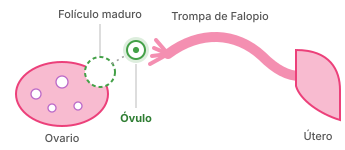

Regla
Días 1–5Qué pasa: el útero suelta el endometrio y sangras.
Cómo te puedes sentir: cólicos, cansancio, menos energía.
Lo básico sobre la regla, explicado con dibujos.

Cada mes, el útero prepara una capa interna blandita, el endometrio, por si hubiera un embarazo. Si no lo hay, esa capa ya no hace falta: se desprende y sale por la vagina junto con un poco de sangre. Eso es la regla (o menstruación).
💡 El día 1 del ciclo es el primer día de sangrado. El ciclo dura desde ahí hasta el día antes de la siguiente regla.

El ejemplo es de 28 días, pero cada cuerpo es distinto: un ciclo de 21 a 35 días es normal. Cuando un ciclo es más largo o más corto, lo que cambia sobre todo es la parte de antes de la ovulación.

Qué pasa: el útero suelta el endometrio y sangras.
Cómo te puedes sentir: cólicos, cansancio, menos energía.

Qué pasa: en el ovario crecen los folículos (bolsitas con un óvulo dentro) y sube el estrógeno.
Cómo te puedes sentir: más energía y mejor humor según avanza.

Qué pasa: el folículo más grande se abre y suelta un óvulo.
Cómo te puedes sentir: flujo transparente y elástico; a veces un pinchazo leve en un lado.

Qué pasa: el folículo vacío se convierte en el cuerpo lúteo, que fabrica progesterona para engrosar el endometrio.
Cómo te puedes sentir: al final, hinchazón, pecho sensible o cambios de ánimo (el famoso SPM).
¿Por qué la regla y la fase folicular se solapan? Porque la fase folicular empieza el día 1: mientras sangras, el ovario ya está preparando el siguiente óvulo.
Mueve la barra o toca un día para ver qué está pasando.
Día 1
Regla

Las hormonas son mensajeros químicos. Cuatro de ellas dirigen todo el ciclo:
Al principio del ciclo hace que crezcan los folículos del ovario.
La fabrican los folículos. Reconstruye el endometrio y suele dar energía.
Sube de golpe a mitad de ciclo: ese pico es el que dispara la ovulación.
Domina la segunda mitad. Prepara el útero; cuando baja, llega la regla.

Más o menos a mitad del ciclo, el folículo más grande se abre y suelta un óvulo. La trompa de Falopio lo recoge y lo lleva hacia el útero. Ocurre unos 14 días antes de la siguiente regla, y por eso IZAR la calcula hacia atrás desde tu próxima regla prevista.
Por eso IZAR marca como fértiles los 4 días anteriores a la ovulación, el propio día y el día siguiente (el óvulo todavía vive unas horas y el flujo fértil no desaparece de golpe):
Flujo transparente y elástico, como clara de huevo.
La temperatura en reposo sube unas décimas después de ovular.
A veces, un pinchazo leve a un lado de la tripa.
⚠️ Las predicciones de IZAR son una estimación: no sirven como método anticonceptivo.
Por qué aparecen y qué suele ayudar:
Por qué: el útero se contrae para soltar el endometrio.
Ayuda: calor en la tripa y moverte suave.
Por qué: las hormonas hacen retener líquido.
Ayuda: beber agua y tomar menos sal.
Por qué: el estrógeno y la progesterona bajan antes de la regla.
Ayuda: descansar, hacer ejercicio, hablarlo.
Por qué: cambios hormonales y pérdida de hierro al sangrar.
Ayuda: dormir bien y comer alimentos con hierro.
Por qué: la progesterona de la fase lútea.
Ayuda: un sujetador cómodo.
Por qué: la bajada de estrógeno antes de la regla.
Ayuda: hidratarte y descansar.
❌ «El ciclo siempre dura 28 días»
✅ 28 es solo la media. Entre 21 y 35 días es normal.
❌ «Con la regla no te puedes quedar embarazada»
✅ Es poco probable, pero posible: los espermatozoides viven hasta 5 días.
❌ «Con la regla no se debe hacer deporte»
✅ Al contrario: moverse puede aliviar los cólicos.
❌ «Si duele muchísimo, es lo normal»
✅ Un dolor que te frena no es normal y puede tener una causa (como la endometriosis). Consúltalo.
❌ «Ducharse o lavarse el pelo con la regla es malo»
✅ Falso: la higiene de siempre es lo mejor.
Esta información es general y educativa. No sustituye el consejo de un profesional sanitario.